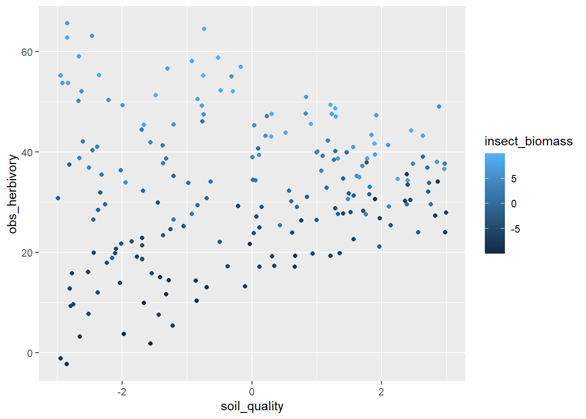

library(cmdstanr)
library(ggplot2)
library(tidyverse)
library(tidybayes)Breaking apart Stan programs
Sometimes we don’t want the output of a Stan model to become enormous. However, Stan models can be very convenient for calculating generated quantities. Of course this can be done in R, but sometimes it is just easier to have all the outputs presented in the same way.
See a description of this in the User’s guide and in the CmdStanR help file
example: Marginal effects in multiple regression
Suppose there is a plant which, when growing in N-rich soil, is able to generate chemical defenses to prevent damage by a herbivorous insect. On poor soil the herbivore eats much more of the plant
set.seed(4812)
soil_quality <- runif(200, min = -3, max = 3)
insect_biomass <- runif(200, min = -10, max = 10)
# each gram of insect biomass eats 1.2 grams of plant biomass
insect_eff_per_g <- 2
soil_quality_eff_per_unit <- 0
soil_quality_on_herb <- -.5
herb_avg_soil_avg_density <- 33
mu_herbivory <- herb_avg_soil_avg_density +
soil_quality_eff_per_unit* soil_quality +
(insect_eff_per_g + soil_quality_on_herb*soil_quality) * insect_biomass
sigma_herb <- 5
obs_herbivory <- rnorm(n = 200, mu_herbivory, sigma_herb)
tibble(soil_quality, insect_biomass, obs_herbivory) |>
ggplot(aes(x = soil_quality, y = obs_herbivory, col = insect_biomass)) +
geom_point()
Here is a Stan program to model this interaction
# class-output: stan
multiple_regression <- cmdstan_model(
here::here(
"posts/2023-11-01-standalone-gq/multiple_regression.stan"
))
multiple_regressiondata{
int<lower=0> n;
vector[n] soil;
vector[n] insects;
vector[n] herbivory;
}
parameters{
real avg_herb;
vector[3] beta;
real<lower=0> sigma;
}
model{
sigma ~ exponential(.25);
beta ~ std_normal();
avg_herb ~ normal(30, 5);
herbivory ~ normal(avg_herb + beta[1]* soil + beta[2]*insects + beta[3]*(soil .* insects), sigma);
}multiple_post <- multiple_regression$sample(data = list(n = length(soil_quality), soil = soil_quality, insects = insect_biomass, herbivory = obs_herbivory), parallel_chains = 2, refresh = 0)Running MCMC with 4 chains, at most 2 in parallel...
Chain 1 finished in 0.3 seconds.
Chain 2 finished in 0.2 seconds.
Chain 3 finished in 0.2 seconds.
Chain 4 finished in 0.2 seconds.
All 4 chains finished successfully.
Mean chain execution time: 0.2 seconds.
Total execution time: 0.8 seconds.We can see that the posteriors are close to the true values (not the point of this post, but always good to check)
multiple_post$summary()# A tibble: 6 × 10
variable mean median sd mad q5 q95 rhat ess_bulk
<chr> <num> <num> <num> <num> <num> <num> <num> <num>
1 lp__ -416. -415. 1.63 1.48 -419. -414. 1.00 1904.
2 avg_herb 32.9 32.9 0.336 0.333 32.4 33.5 1.00 3855.
3 beta[1] 0.192 0.190 0.191 0.192 -0.123 0.507 1.00 4847.
4 beta[2] 1.93 1.93 0.0607 0.0589 1.83 2.03 1.00 4096.
5 beta[3] -0.474 -0.474 0.0341 0.0345 -0.530 -0.418 1.00 4922.
6 sigma 4.80 4.79 0.238 0.235 4.43 5.20 1.00 4098.
# ℹ 1 more variable: ess_tail <num>Now suppose we want to plot this interaction. We could do so in R, no problem. We could also do that in the model above. But you might not want to! reasons include:
- keeping the output of any one model small(ish) so that you can actually work with it
# class-output: stan
multi_reg_triptych <- cmdstan_model(
here::here(
"posts/2023-11-01-standalone-gq/multi_reg_triptych.stan"
))
multi_reg_triptychdata {
int<lower=0> npred;
vector[npred] new_soil;
vector[npred] new_insect;
}
// copied from the previous model!
parameters{
real avg_herb;
vector[3] beta;
real<lower=0> sigma;
}
generated quantities {
vector[npred] pred_herbivory;
for (i in 1:npred){
pred_herbivory[i] = normal_rng(avg_herb + beta[1]* new_soil[i] + beta[2]*new_insect[i] + beta[3]*(new_soil[i] * new_insect[i]), sigma);
}
}get the prediction data ready
newdata <- expand_grid(new_insect = c(-5, 0, 5),
new_soil = seq(from = -10, to = 10, length.out = 11))
multi_trip <- multi_reg_triptych$generate_quantities(
fitted_params = multiple_post,
data = list(
new_insect = newdata$new_insect,
new_soil = newdata$new_soil,
npred = nrow(newdata)
)
)Running standalone generated quantities after 4 MCMC chains, 1 chain at a time ...
Chain 1 finished in 0.0 seconds.
Chain 2 finished in 0.0 seconds.
Chain 3 finished in 0.0 seconds.
Chain 4 finished in 0.0 seconds.
All 4 chains finished successfully.
Mean chain execution time: 0.0 seconds.
Total execution time: 1.0 seconds.multi_trip |>
gather_rvars(pred_herbivory[i]) |>
bind_cols(newdata) |>
ggplot(aes(x = new_soil, dist = .value)) +
stat_lineribbon() +
facet_wrap(~new_insect) +
scale_fill_brewer(palette = "Greens", direction = -1) +
labs(x = "new_soil", y = "predicted herbivory")